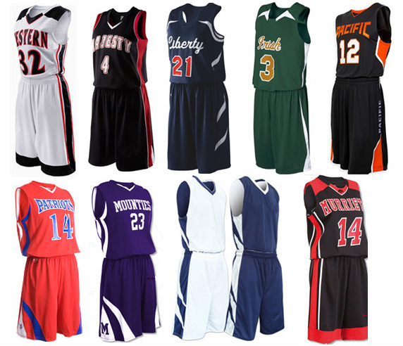

Welcome to my page
this page to sell Sport clothes
Football
Basketball
Tennis
more than mere attire, embody the spirit of the beautiful game. Vibrant jerseys, worn with pride, become the canvas for tales of triumph and teamwork. Each color, each stripe, carries the weight of a team's history and aspirations The iconic jersey, adorned with a player's number and name, is a symbol of identity and unity on the field. It's not just a garment; it's a shield against opponents and a badge of honor. The sweat-soaked fabric tells a story of effort, sacrifice, and passion,

a fusion of style and functionality, embody the dynamic spirit of the game. From the sleek jerseys to the high-performance sneakers, every piece is designed to facilitate agility, precision, and teamwork on the court. The jersey, a symbol of player identity, bears not just a number but a narrative of dedication and talent. It's a canvas for self-expression, a way for players to showcase their unique skills and personalities while representing their team. With every pass, dribble, and slam dunk, the jersey becomes a part of the player's story in the fast-paced world of basketball. Shorts, meticulously engineered for freedom of movement, allow players to glide, cut, and leap with unparalleled ease. As players navigate the hardwood, the shorts adapt to their rhythm, enabling them to execute intricate plays and assert dominance in the game. Their design is a marriage of comfort and performance, enhancing the player's ability to shine on the court. Sneakers, the basketball player's essential tool, are a testament to innovation and technology. These shoes offer the support, cushioning, and grip required for sudden changes in direction, explosive jumps, and swift sprints. With every squeak against the court, sneakers underscore the athlete's determination to conquer challenges and soar to new heights. Accessories like wristbands and headbands aren't just fashion statements; they serve functional purposes as well. Wicking away sweat, maintaining focus, and adding a touch of personal flair, these small additions complete the ensemble, ensuring players are in peak form throughout the game. In the realm of basketball, clothes are more than just uniforms; they're a form of self-expression, camaraderie, and competitive spirit. Every detail, from the team colors to the player's choice of footwear, contributes to the narrative of the sport. Basketball clothes echo the unity of the team, the grit of the players, and the thrill of a game that's as much about style as it is about substance. Tennis clothes, a blend of tradition and innovation, encapsulate the grace and precision that define the sport. From the classic whites to the modern designs, every piece of tennis attire reflects the player's dedication to both style and performance on the court. The tennis polo, a timeless staple, echoes the elegance of the game's origins. Its crisp lines and comfortable fit allow players to move with agility, while the collar adds a touch of sophistication. As forehands and backhands are exchanged, the polo becomes a canvas where players showcase their skill and resilience. Shorts, carefully designed for swift movement, are a vital component of tennis clothing. They offer the flexibility needed for quick sprints and dynamic lateral shifts. The lightweight fabric ensures that players can traverse the court with ease, making every shot and volley a testament to their agility and technique. Tennis skirts, a symbol of feminine grace and strength, blend fashion with functionality. Whether pleated or streamlined, these skirts allow for a full range of motion while adding a touch of flair to the court. With every serve and overhead smash, the skirt underscores the player's determination and poise. Footwear, specialized for traction and support, is a crucial element of tennis attire. Tennis shoes offer stability during rapid direction changes and
a blend of tradition and innovation, encapsulate the grace and precision that define the sport. From the classic whites to the modern designs, every piece of tennis attire reflects the player's dedication to both style and performance on the court The tennis polo, a timeless staple, echoes the elegance of the game's origins. Its crisp lines and comfortable fit allow players to move with agility, while the collar adds a touch of sophistication. As forehands and backhands are exchanged, the polo becomes a canvas where players showcase their skill and resilience. Shorts, carefully designed for swift movement, are a vital component of tennis clothing. They offer the flexibility needed for quick sprints and dynamic lateral shifts. The lightweight fabric ensures that players can traverse the court with ease, making every shot and volley a testament to their agility and technique. Tennis skirts, a symbol of feminine grace and strength, blend fashion with functionality. Whether pleated or streamlined, these skirts allow for a full range of motion while adding a touch of flair to the court. With every serve and overhead smash, the skirt underscores the player's determination and poise. Footwear, specialized for traction and support, is a crucial element of tennis attire. Tennis shoes offer stability during rapid direction changes and relentless rallies. Their advanced technology aids in shock absorption and ensures players can move effortlessly, giving rise to the fluid dance that defines tennis. Accessories like visors and wristbands are not only fashion statements but also serve practical purposes. They shield players from the sun's glare, wick
 Call Us
Mail Us
Whatsapp Us
Call Us
Mail Us
Whatsapp Us